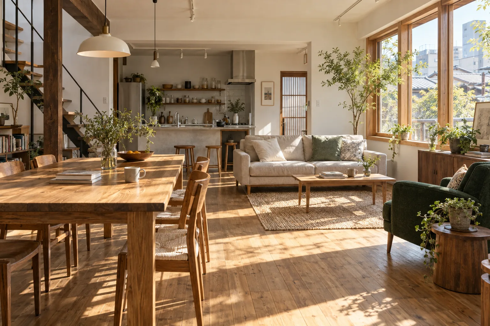
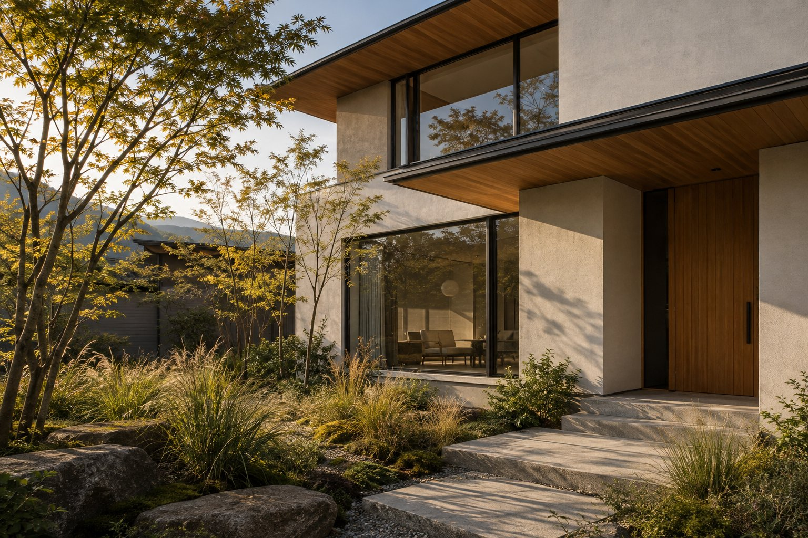
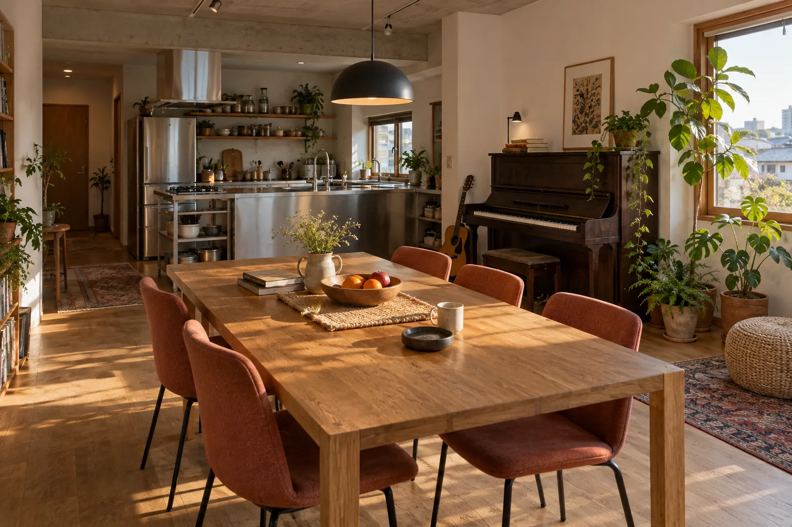

架空事例 / 給湯設備家族構成に合わせた容量見直し
現状写真 → 設置条件の確認 → 見積範囲の整理を一画面で。

START WITH YOUR TROUBLE
FIRST RELEASE
緊急性が高い設備から先に公開し、順次、水まわり・電気・内装へ展開する想定です。

FICTIONAL CASES

架空事例 / 給湯設備現状写真 → 設置条件の確認 → 見積範囲の整理を一画面で。
設備ごとの相談を分断せず、住まい全体の優先順位を確認。
PHOTO ESTIMATE DEMO
これは送信しない操作デモです。入力内容はブラウザ内で確認でき、外部には送られません。